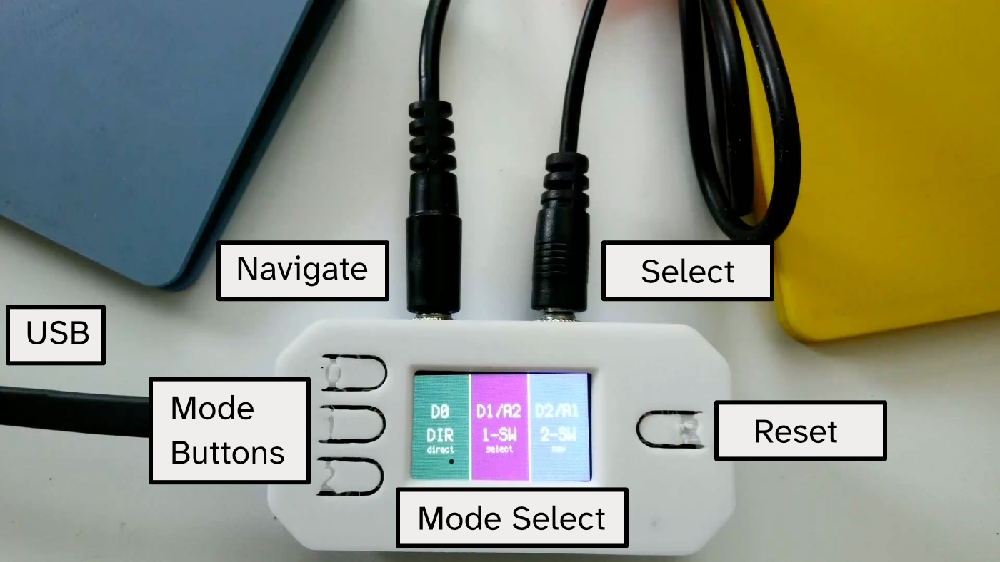
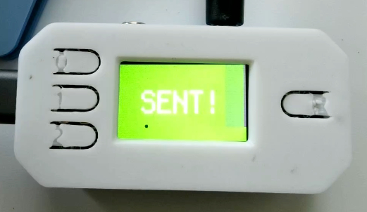
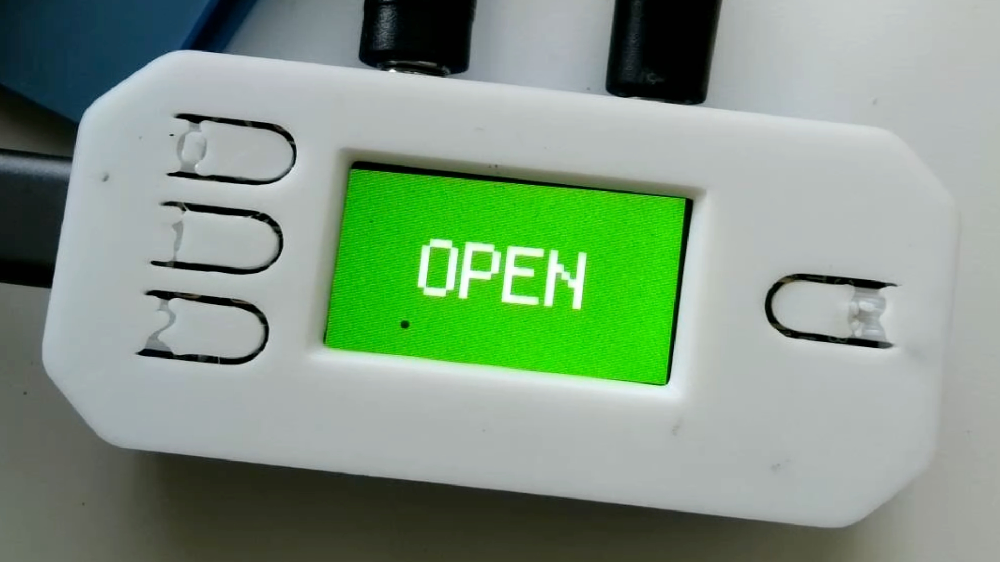
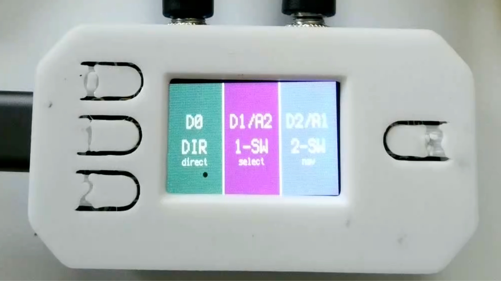
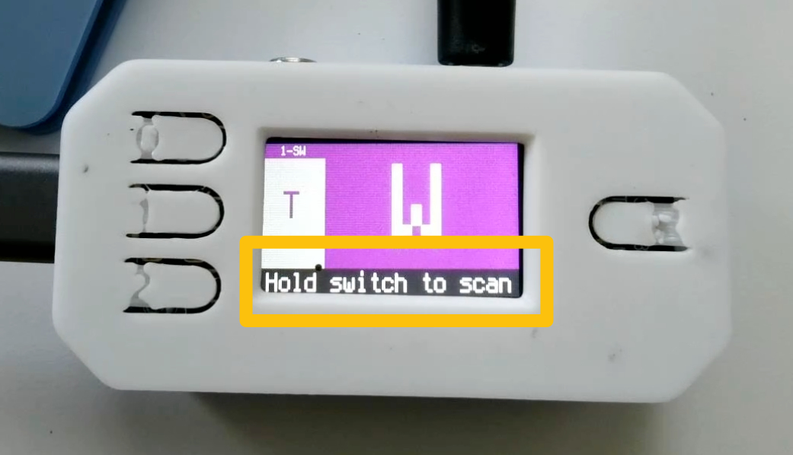
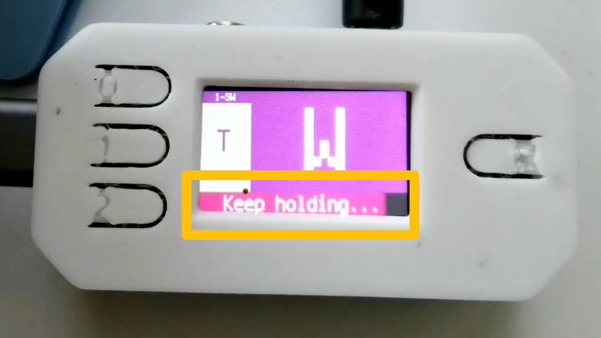
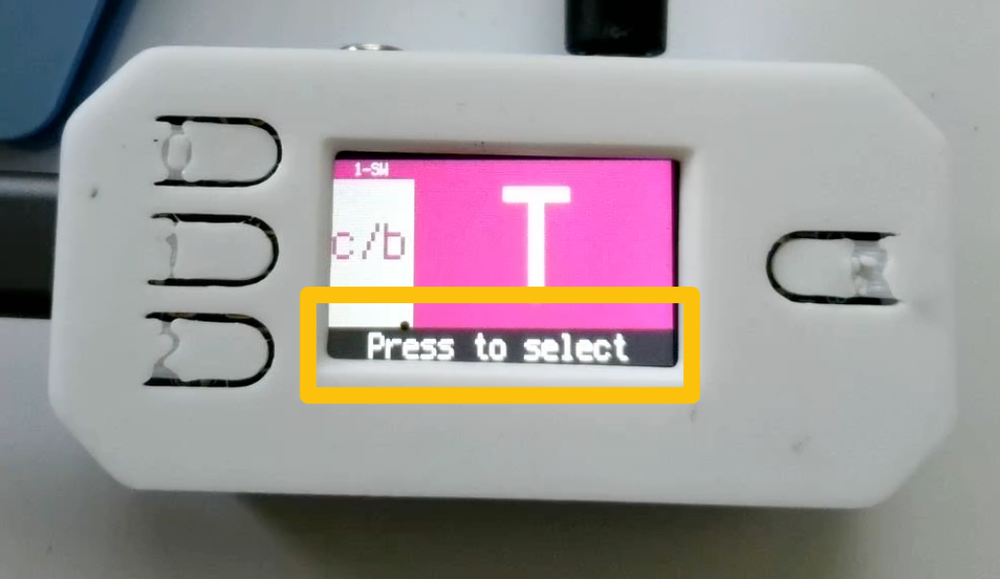
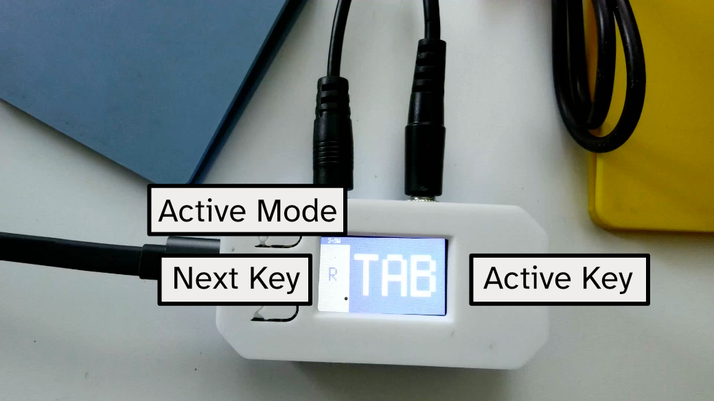
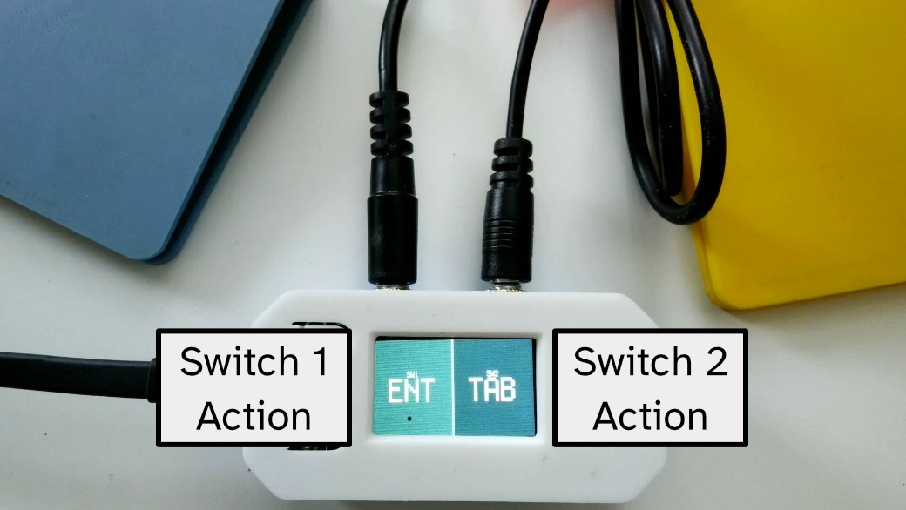
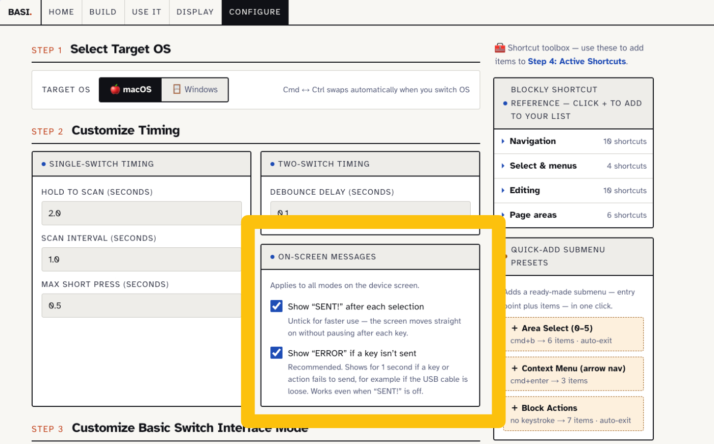

User guide
Use It
How to switch on the device, pick a mode, and control Blockly with one or two switches. Still need to build the device? Start with the build instructions.
Getting Started
The switch interface plugs into a computer by USB and behaves like a keyboard. Each switch press sends a Blockly keyboard shortcut, so no extra software is needed on the computer.
- Plug one or two assistive switches into the 3.5 mm jacks. A2 is the select switch; A1 is the navigate switch.
- Connect the device to the computer with a USB-C data cable. The screen lights up with the mode-select screen.
- Open your Blockly environment and click once into the workspace so it has keyboard focus.
- Choose a mode (see Choosing a mode) and start pressing.
Reading the Screen
Each mode has its own screen colour, so you can tell at a glance which mode you are in. A short text label shows the mode too, for anyone who finds the colours hard to tell apart.
| Mode | Screen colour | Label |
|---|---|---|
| Direct switch (Mode 0) | Teal | SW1 / SW2 |
| Single-switch (Mode 1) | Purple, turning magenta while scanning | 1-SW |
| Two-switch (Mode 2) | Blue | 2-SW |
In single-switch and two-switch modes the screen is split into two panels.
| What you see | What it means |
|---|---|
| Large symbol, right panel (mode colour) | The shortcut that will be sent if you select now |
| Small symbol, left panel (grey) | The shortcut that comes next |
| “1-SW” or “2-SW” at the top of the grey panel | Which mode you are in |
| Thick orange border | This item opens a submenu |
| Orange “SUB” label at the bottom of the grey panel | You are inside a submenu |
| Dark bar along the bottom (single-switch only) | A reminder of what the switch does right now, such as “Hold switch to scan” |

Messages after a selection
After each selection the screen can flash a short message. Both messages can be turned on or off in the Shortcut Configurator (Step 2, On-screen Messages).
| Message | What it means |
|---|---|
| Green “SENT!” | The shortcut was sent to the computer. Turning this off makes the device faster, because the screen moves straight on. |
| Red “ERROR / Not sent” | The shortcut did not reach the computer, for example because the USB cable is loose. Shows for 1 second. Recommended to keep on. |
| Green “OPEN” | A submenu folder opened (it has no shortcut of its own to send). |


Choosing a Mode
When the device starts it shows the mode-select screen. Its three columns use the same colours as the modes themselves: teal for direct switch, purple for single-switch and blue for two-switch. Choose a mode with an onboard button or an external switch.
| Mode | Onboard button | External switch |
|---|---|---|
| Mode 1 — Single-switch scanning | D1 | Click A2 (select) |
| Mode 2 — Two-switch navigation | D2 | Click A1 (navigate) |
| Mode 0 — Direct switch | D0 | Double-click A1 or A2 |
To get back to the mode-select screen from any mode, press D0 or the board’s RESET button. In Mode 0 you can also hold a switch for 1.5 seconds.

Single-Switch Scanning
One switch (A2) does everything. The device steps through the shortcut list for you, and you press when the one you want appears. A bar along the bottom of the screen always says what the switch will do next.
What the hint bar shows
- “Hold switch to scan” — the device is waiting. The screen is purple. A short press sends the shortcut shown.
- “Keep holding...” — once you hold past a short press, the bar fills up. Keep holding until it is full.
- “Press to select” — scanning has started and the screen turns magenta. Let go of the switch, then press again when the shortcut you want appears.



Two-Switch Navigation
One switch moves through the list and the other sends. You set the pace, so this is usually faster than scanning. The screen is blue, with “2-SW” at the top of the grey panel.

Direct Switch
Each switch sends one action straight away, with no list to move through. This suits users who need a simple, low-effort input, or who want switches for mouse clicks, scrolling or media keys.
The screen shows SW1 on the left and SW2 on the right in two shades of teal, each with the symbol for its action. If “SENT!” messages are on, the side you press flashes green when the action is sent. If an action fails, a red “ERROR” screen appears (when error messages are on).

Actions a switch can send
| Type | What it does | Example |
|---|---|---|
| Keyboard key | Press any key or key combination | Enter, Tab, Ctrl+C, Cmd+Space |
| Mouse click | Left, right or middle click | Left click to activate |
| Mouse scroll | Scroll up or down per press | Scroll down a page |
| Mouse move | Move the pointer per press | Nudge the cursor right |
| Media control | Play/pause, volume, track skip, mute, brightness | Play/pause music |
Customising Shortcuts (optional)
The device works out of the box with built-in shortcuts. To change the shortcut list, scan order, timing, on-screen messages or Mode 0 actions:
- Open the Shortcut Configurator in your browser.
- Choose macOS or Windows, then adjust shortcuts and timing. To edit an existing setup, load its
config.pyfirst. - Under On-screen Messages in Step 2, choose whether to show “SENT!” after each selection and “ERROR” if a send fails. Experienced users often turn “SENT!” off for speed.
- Click Generate config.py, then Download config.py.
- Copy the file to the root of the
CIRCUITPYdrive. The device restarts with the new settings.

Web Display (optional)
The onboard screen is small. The Web Display shows the same information large and high-contrast on the computer screen, with optional text-to-speech that reads out each shortcut.
- Open the Web Display in Chrome or Edge.
- Click Connect and choose the device from the list.
- Turn on text-to-speech or sound if wanted, then use the switches as normal.
Troubleshooting
- The shortcut seems to send but nothing happens in Blockly
- Click into the Blockly workspace so it has keyboard focus. If only shortcuts with Ctrl or Cmd fail, the configuration is probably for the other operating system: regenerate
config.pywith the right OS selected. - Single-switch mode sends instead of scanning
- Keep the switch held until the bar along the bottom fills and the screen turns magenta. A short press sends the current shortcut. If you let go before the bar fills, nothing is sent and scanning doesn’t start.
- The screen shows “ERROR / Not sent”
- The shortcut didn’t reach the computer. Check the USB cable is firmly connected and carries data, and that the computer is awake. In direct switch mode, also check that the action type (for example mouse or media) is supported.
- The device pauses after every selection
- That pause is the “SENT!” message. Turn it off in the Shortcut Configurator under On-screen Messages, then copy the new
config.pyto the device. - I’m stuck in a mode
- Press D0 or RESET to return to mode select. In Mode 0, hold either switch for 1.5 seconds.
- I’m stuck in a submenu
- Move to the back item (<) at the end of the submenu and select it.
- The Web Display can’t find the device
- Use Chrome or Edge, check the USB cable carries data (not just power), and close any other page or program connected to the device.
Found something else? Report an issue on GitHub (opens in new tab).